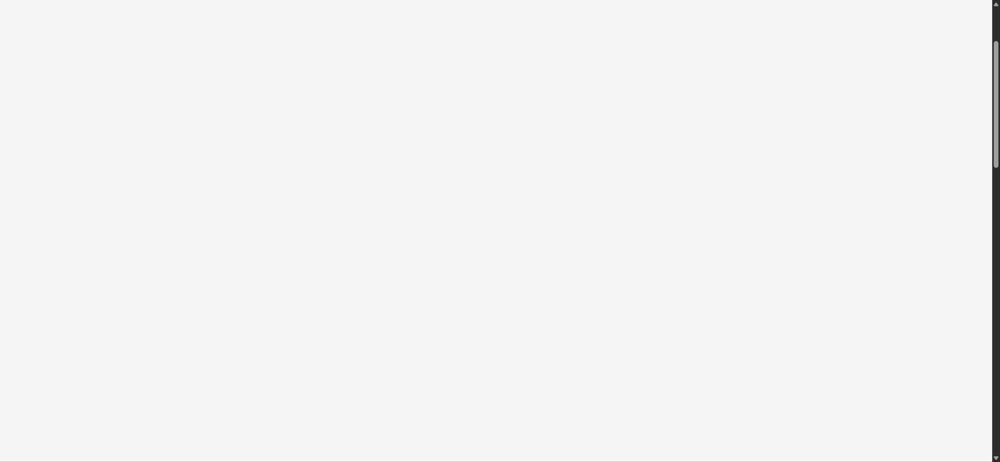

Tracefolio REPORTS & ISSUES
Tracefolio REPORTS & ISSUES초안 취소 후 글꼴과 새로고침 복원·원문 초기 표시 수정
해결편집 취소의 원본 DOM 복원과 초안 주소 유지·초기 원문 숨김을 적용하고 실제 취소·저장·새로고침을 검증했습니다.
작업 결과
취소 전후 제목·본문 HTML·글꼴이 일치했고 저장한 초안은 새로고침 후에도 유지됐습니다.
변경 내용
재현 조건
Chrome 네이버 블로그 확장 0.3.4~0.3.6 사용자 신고, 수정본 0.4.1 실제 실행
재현 순서
초안 열기 → 원고 수정 → 취소. 또는 초안을 새로고침합니다.
기대 동작
같은 초안과 본문 글꼴·사진이 유지되고 실제 참조 게시물이 먼저 표시되지 않아야 합니다.
실제 동작
사용자가 취소 후 작은 본문 글꼴과 새로고침 시 실제 최신 글 전환/잠깐 표시를 신고했습니다.
원인
소스에서 본문 p 안의 중첩 p와 취소 시 innerHTML 재해석, 1회 소비하는 초안 세션, document_idle에서의 뒤늦은 초안 전환 경로를 확인했습니다. 과거 글꼴 재해석만의 단독 원인은 별도 이전 버전 실기기 재현을 하지 않았습니다.
적용 내용
중첩 문단 제거·원본 DOM 복제 복원·저장 후 원본 폰트 구조 유지. #miro-draft 주소에서 저장소 원고를 재조회하며 document_start에 참조 본문을 숨긴 뒤 초안 준비 후 표시합니다.
검증
실제 Chrome에서 취소 전후 제목·본문 innerHTML·font-family·15px/27px 일치. 제목·본문·태그 저장 후 새로고침 유지, 사진 2장·원본 링크 보존. document_start 원문 숨김/일반 글 비간섭과 반복 초안 복원 회귀 검사 통과. 원문 비표시의 첫 페인트 타이밍 정량 측정은 하지 않았습니다.

남은 사항
공개 발행은 보류. 동일 배율 과거 글꼴 전 화면은 미확보이며 실제 수정 후 취소 전후 DOM/글꼴 비교로 검증했습니다.
작업 시간
- 제안 시간: 2026-11-08 후속 요청 15~25분
- 실제로 완료된 시간: 시작 2026-11-08 15:23:03 Asia/Seoul. 구현·실행 기록 2026-11-08 15:44:04 Asia/Seoul. 공개 보고서 배포 확인은 별도입니다.
- XERJ: 미사용 — XERJ 도구 미제공. rg·현재 소스·실제 DOM·CLI 실행으로 대조했습니다.